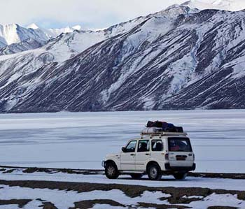

JEEP SAFARI Breaking the monotony of trekking and mountain climbing in Ladakh, Jeep Safaris are getting highly popular among the Ladakh tourist. who wish to explore the beauty of this Trans-Himalayan region of India , for them nothing is more comfortable and promising than a jeep safari.
There are some exotic places in Ladakh which are far from reach. These places can be explored either by the locals or some high spirited trekkers and adventure lovers. The inhospitable terrains of Ladakh are not meant for an average traveler. Yet, people desire to explore the different facets of the valley.
In order to explore the landscapes of Ladakh and its wilderness in the safest way, yet with a thrill of adventure, one must get on to the numerous Jeep safari tours in Ladakh. These classified jeep safari tours are meant to explore the vivid landscapes like the Nubra valley, Zanskar valley , Pangong lake and Tsomoriri lake etc.
">
JEEP SAFARI